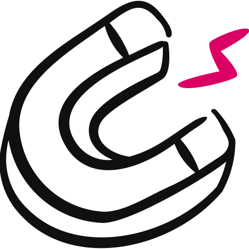

Offer Matrix™ · Step 3 · The Event Magnet™
The Event Magnet™
One hot step of your Magic Formula™, turned into a free, visual tool a stranger can use in one sitting. It's the fuse that fills your event.

You'll leave with your Event Magnet™ Spec in two parts: Part A, the panel-by-panel build spec for your one-page tool, and Part B, the content you take into your event.
- It's the fuse, not the payload. One small, free, visual win that gets the right people into your event. 01
- You score all nine steps, then pick. The whole board is shown, and you make the call. 04
- A tool, not a teach. Something they USE in one sitting, never a guide or a report. 05
- Part B takes it into the room. The pain, the walk-away and the bridge line, zoomed in on one step. 07
- All six checks must pass. The Builder runs the 6-Point Check before your spec is done. 09
01
The Fuse That Fills the Room
Your Event Magnet™ is a free, visual tool: one hot step of your Magic Formula™ turned into something a stranger can use in a single sitting.
It's a cheat sheet, a template, a checklist, a script, a scorecard or a one-page map. It's not a guide, a report or an educational PDF.
Here's the difference that matters. A guide teaches a concept. A tool delivers a result.
Think of it as the fuse. Your Magic Formula™ and your Red Diamond Offer™ are the payload, and they sit still without something to light them.
The Event Magnet™ is the first real value a stranger gets from you. It's what makes them lean in and raise their hand to come to your event.
Figure 01 · The shape of an Event Magnet™. Small, visual, and useful in minutes.
And it's incomplete on purpose. It solves ONE problem and leaves them wanting the rest of your system. That's not a flaw. That's the whole design.
Matthew White built Coach Launch on this kind of order: $24.6 Million in high-ticket sales generated and $5.2 Million in recurring client results delivered, all downstream of free tools that earned trust before anyone was asked to buy.
The secret sauce: the visual
When someone sees an actual THING on their screen, their brain asks: "What is that? Do I need that? Am I already doing this?"
Words describe. Visuals demand attention. You can hold a one-page map up in a video or show it in an ad. A block of text never stops the scroll.
If you can't show it on screen, it isn't an Event Magnet™ yet.
What it is not
It's not a guide or a report. Those teach. They don't hand someone a result they can hold.
It's not your whole system dressed up as "free." Give away everything and there's no reason to buy.
It's not a "free call." That asks for their time before you've earned it.
And it's not your offer. That's your Red Diamond Offer™. The Event Magnet™ is the free thing that fills the room where you make it.
02
Where It Fits
The Event Magnet™ sits in Step 3 of the Offer Matrix™, the first pillar of The $100K Day Engine™.
It's easy to get this backwards, so here it is plainly. Your Red Diamond Offer™ is your Enrollment Doc, the offer you sell. Your Event Magnet™ is not part of that offer. It's what gets the right people into the room where the offer gets made.
Figure 02 · The $100K Day Engine™. Three pillars, nine steps. Your Event Magnet™ is built inside Step 3.
The Step 3 assets
| Asset | Its job |
|---|---|
| The Money Model | The path, the price, the profit math and your close |
| The Red Diamond Offer™ | Your Enrollment Doc: what you sell, and the document that enrolls them |
| The Event Magnet™ · You are here | The free, visual tool that fills the room |
| Cash Flow Max™ | The VIP upsell and order bumps that raise cart value |
What feeds in, and what it feeds
Its seed is a hot step from your Magic Formula™ (Step 2). Its title sits under your $Million Promise™ (Step 1). Both are required.
Your SCORE™ Card helps but never blocks. Plenty of people build their Event Magnet™ before it's finished. Your Money Model helps decide where the tool sends people.
Downstream, it fills your Money Magnet™ events, and your Sniper Presentation™ (Step 4) uses its event content. Your Goliath Content™, Pixie Dust Social™ and Dragon Fire Ads™ (Steps 7–9) carry the visual everywhere.
A weak Event Magnet™ quietly starves everything after it. Your ads pay more for every lead, because a boring or text-heavy magnet doesn't stop the scroll.
Your events stay empty. And the people who do opt in never warm up. Get the fuse right and the whole engine lights.
03
How You'll Build It
You don't invent an Event Magnet™ from a blank page. You build it from a step you've already got.
There are eight moves, in order. Lock your foundation. Score all nine steps and pick your hot stepThe one step of your Magic Formula™ that makes the best free tool: specific, curious, quick, incomplete and not boring.. Pick the format. Set a working title. Build the tool. Run the 6-Point Check. Set the next step. Then position it for your event.
You walk away with one spec in two parts. Part A is detailed enough that you or a designer could build the tool from it. Part B is the content that makes the tool earn its place in your masterclass.
The two versions
| Version | What it is | When to use it |
|---|---|---|
| One-Step (default) | ONE hot step turned into a cheat sheet, template, checklist, script, calculator or map | Almost always. Faster to build, one clean win. |
| Full System Reveal | Your whole Magic Formula™, all 3 phases and 9 steps, as one visual map | Only when no single step gives a win on its own, like a journey where the steps must go in order |
Default to one step. "Here's my whole system" usually feels generous and lands as too much, too soon.
04
Finding Your Hot Step
You may already have a hot step flagged from your Magic Formula™. The Builder doesn't take it on trust. It scores the whole system first.
Not every step makes a good magnet. "Set your goals" is necessary, and nobody on earth opts in for it.
The five tests
- Specific. A real thing they get, not a concept. "The Pipeline Map," not "Understand your market."
- Curiosity. The name makes them think "What's that?"
- Quick win. They can use it in one sitting, about 15 to 30 minutes, and get a real result.
- Incomplete. It solves one problem and makes them want the rest of your system.
- Not boring. Skip the homework steps. Pick the bright, shiny, useful tool.
The Hot Step Scorecard
The Builder runs all nine of your steps through all five tests and shows you the whole board. Not a shortlist, not a "top three."
| Step | Specific | Curiosity | Quick win | Incomplete | Not boring | Score |
|---|---|---|---|---|---|---|
| The Pipeline Map | ✓ | ✓ | ✓ | ✓ | ✓ | 5/5 |
| The 7-Touch DM Sequence | ✓ | ✓ | ✓ | ✕ | ✓ | 4/5 |
| Map Your Market | ✓ | ✕ | ✓ | ✓ | ✓ | 4/5 |
| Set Your Goals | ✕ | ✕ | ✓ | ✕ | ✕ | 1/5 |
Figure 04 · Part of a scorecard. An illustrative example with four rows. Your real board has all nine.
You make the call, not the AI. If the step you flagged doesn't win, the Builder says so, shows what beat it, and still lets you choose.
Ties are normal. They're broken by curiosity first, then "not boring," then the earlier phase. If two are truly level, it says so. That one's your call.
"Define your ideal client." Important homework, and it makes people yawn.
"The 7-Touch DM Sequence." A named tool that promises a result you can picture.
The best hot steps usually come from Phase 1 or early Phase 2 of your Magic Formula™, where the first "aha" lives.
05
A Tool, Not a Teach
Not everything can be an Event Magnet™. There's a clear line between a tool and a piece of content.
Guides, reports, ebooks, long PDFs, blog posts with a cover, "free trainings," free calls, full courses or challenges.
A one-page cheat sheet, a template, a checklist, a script, a calculator or scorecard, a one-page map, an audit, a swipe file, or a worksheet, builder, generator or planner.
Catch yourself building a "guide"? Ask: what's the one tool inside it someone could use in one sitting? That's your Event Magnet™.
Minutes, in one sitting. If they can't use it and walk away with a result in that time, it's too big. There's no 90-day Event Magnet™.
How the tool is built: panels
Whatever format you pick, it's built out of panelsOne job on the page: a short label, a line saying what to do, and the space to do it.. Each panel has four parts.
| Part | What it does |
|---|---|
| The label | Two to four words naming the panel's job |
| The teaching line | One or two sentences: what to do, and why it matters |
| The fill | How they fill it in: lines, a scoring row, a two-column table, numbered slots |
| The caption | A line underneath naming what they just made |
Your tool gets two to four working panels, plus three that are always there: the Result panel, the System Map panel and the next-step panel. Five to seven in total.
Three things that make it feel built
Not "Problem 1," but something memorable and yours. The Builder does the naming.
One focus, one number, one thing to do next. A tool that ends in a list isn't finished.
With your hot step marked, beside one line naming what this tool doesn't solve.
You don't design any of this. The Builder asks you two questions: walk me through this step the way you'd teach it, and what do people get wrong? Then it lays out the whole tool for you to react to.
Once your first magnet is working, you can come back and build one for any other step. Each is its own build, and each still solves exactly one step.
06
The Hook and the Next Step
The words at the top of the tool are its headline for your ads. That's literally what they are.
So the Builder writes the hook last, once it knows what's on the tool and what it leaves people wanting. Early on, you only set a working title.
Three lines, three jobs
The thing they've quietly been asking themselves.
The object itself, named so it makes them curious.
What they'll do with it, how fast, and what they get to skip.
"Use this worksheet to find leads." "Why Your Pipeline Is Inconsistent." A blog title names no object.
A number nobody expected, a verb that stings a little, and a named thing they get to skip.
The hook sits under your $Million Promise™ and never repeats it. Your promise is the destination. The hook is one surprising thing on the way.
The Builder writes five candidates, each built a different way, and you pick the one that stops you.
One clear next step, and it costs them something
Every Event Magnet™ ends with exactly one next step. Where it points is your call, from four options.
| Next step | What it is |
|---|---|
| Your masterclass or event | Register for your Money Magnet™ event, free or ticketed |
| A paid strategy session | Book and pay for a session, with the price on the tool |
| Your membership | Join straight from the page |
| An application | Apply now, for your high-ticket offer |
The Builder leads with whatever your Money Model's close points to, then checks with you.
"Book a free call," "schedule a chat," "learn more." These leak the momentum you just built.
The next step has to cost them something: time at your event, money for a session, or the effort of an application. That cost sorts the curious from the serious.
Then the Authority Detonator™, built separately
When the next step is your event, people land on a thank-you page after they register. The Authority Detonator™ is the video on it. Its job is to build rapport, get them excited and get them to show up.
It isn't built here. It has its own builder, with your Cash Flow Engine™ (Step 5), and it draws on your Part B.
Use the visual everywhere
Your Event Magnet™ isn't only a download. Show it in your posts, put it in your ads, and hold it up live at your events.
Show your Magic Formula™ visual beside it, and every piece carries two curiosity loops: the one small tool, and the whole system it's part of.
07
Part B: Your Event Content
Your magnet doesn't just sit on a page. It shows up inside your event.
You teach the step behind it. You get the room to open it and use it live. Then you tell them it's one of nine. That's the moment a free download becomes proof.
The thing to get right: zoom in
Your SCORE™ Card already holds the big pain and the big reward. Part B is not that. It's the same person, zoomed right in on one step.
| System level (your SCORE™ Card) | Step level (Part B) | |
|---|---|---|
| Pain | "Your pipeline is feast or famine." | "You open the DM box, write three versions, delete all three, close the tab. Zero sent." |
| Reward | "A calendar full of people who want to work with you." | "Seven messages written in your own words, the first three sent, in twenty minutes." |
Figure 07 · Same business, two heights. An illustrative example. The small moment is what makes the big promise believable.
Would this line still be true of a different hot step in the same business? If yes, it's pitched too high. Go smaller.
The six blocks
| Block | What it holds | Where it lands in your event |
|---|---|---|
| B1 · The Pain It Solves | The moment they get stuck, what they do instead, what it costs them | The setup before you teach |
| B2 · The Walk-Away | What they hold, what shifts, the "for the first time, you can…" line | The payoff, right after the demo |
| B3 · The Live Teach | 3–4 teaching points, the do-it-now instruction, a chat prompt, the minutes it takes | The teaching part of your masterclass |
| B4 · The Curiosity Gap | What it doesn't solve, the question it leaves, the bridge line | Into your system reveal, and again at the close |
| B5 · What It Proves | The objection it already killed, the credibility it earned | Your proof moments |
| B6 · Soundbites | The one-liner, five host lines, a registration-page bullet | On stage, in ads, on your registration page |
B4 pays for the whole thing. They've just used your tool, it worked, and they can feel exactly where it stopped. That's when you say: "That's step four of nine. Here's the other eight."
B3's secret is to make them use it live. "Open it now and fill in box one. Sixty seconds. Then drop your number in the chat." It lifts engagement and creates the proof B5 uses.
No SCORE™ Card yet? Part B still gets built in full. Only the lines that tie your small pain to the big one are marked provisional, so you can sharpen them later.
08
Before and After
Here's the whole thing in action: one coach, before and after.
"The Complete Guide to LinkedIn Outreach." A 27-page PDF covering profiles, connection requests, messaging, content and follow-up.
- Hot step: "Start Conversations," from Phase 1
- Format: a fill-in-the-blank script
- On it: seven fill-in messages, a "who to send to" checklist, a box to track replies
- One-sitting win: in about 20 minutes, all seven written and the first three sent
- Next step: register for the free masterclass
"The 7-Touch DM Sequence: start 5 real conversations this week, without cold-blasting strangers."
Figure 08 · Same coach, same know-how. An illustrative example: the shape shows the structure, not a guaranteed result.
The guide teaches concepts, you can't show 27 pages in an ad, and it's so complete there's no reason to work with the coach.
The tool is visual, solves one small problem fast, leaves them wanting the rest, and points to one next step.
09
The Hard Rules and the Check
These keep an Event Magnet™ pulling people in. The Builder holds you to every one.
- One hot step only. From your Magic Formula™, never a mash-up.
- Visual, always. If you can't show it on screen, it isn't ready.
- A tool, not a teach. Never a guide, report or ebook.
- One sitting, one win. About 15–30 minutes.
- The hook has to bite. Written last, under your $Million Promise™, never repeating it.
- One next step that costs them something. Never a free call, never "learn more."
- Zoomed in. Part B is about this one step, not your whole system.
- Your numbers, not Matthew's. Never borrow anyone's numbers or invent stats.
The 6-Point Check
Your Event Magnet™ isn't scored out of 25. The hot step and the promise it's built from were already scored. So this is pass/fail: six checks, and all six have to pass.
| Check | It passes when… |
|---|---|
| 1 · On-System | It's ONE hot step from your locked Magic Formula™ |
| 2 · Visual | You can show it on screen and it opens a curiosity loop |
| 3 · A Tool, Not a Teach | It's a real object they USE |
| 4 · Quick Win | It's usable in one sitting and solves one small problem fast |
| 5 · Incomplete by Design | It solves one piece and makes them want your full system |
| 6 · Leads to One Next Step | One next step, to one of the four approved places, and it costs them something |
Any fail means you name the gap, fix that one thing and check again. That's a lot cheaper than fixing it after you've run ads to it.
10
Build Your Event Magnet™
Now you build it. Have your Magic Formula™ and $Million Promise™ ready, and your SCORE™ Card if it's done.
The Event Magnet™ Builder
It scores all nine of your steps, helps you pick your hot step, lays out the whole tool for you to react to, runs the 6-Point Check and writes your event content. It asks one question at a time and waits for your answer.
Paste the whole prompt as it is. The length is instructions for the AI, not work for you.
- Copy the prompt. Use the button above, or download the file.
- Open a new chat. In Claude, start it inside your $100K Day AI Workspace project so it can read your work. ChatGPT works too.
- Paste it and send. The Builder says hello and asks for your Magic Formula™ and $Million Promise™. Check: after that it asks one question at a time, then waits.
- Answer one question at a time. Eight steps: lock the foundation, score all nine steps, pick the format, set a working title, build the tool, run the 6-Point Check, set the next step, position it for your event.
- Pick your hook. At the end it writes five headline candidates, and you keep the one that stops you. Check: all six checks pass.
- Save it. In your AI Workspace it goes in Client Engine › Offer Matrix › event-magnet. The Builder names the file after its step, so a second magnet sits beside the first.
11
Check Your Work
Almost every weak Event Magnet™ fails in one of these seven ways. Check yours against each one.
"The Complete Guide to X." Pages of teaching with a cover.
Pull out the one thing they USE, not a stack they read.
"5 Mistakes Coaches Make." No object, no result, nothing to want.
Name the thing and promise a result, with a real number in it.
The whole transformation, free. There's no reason left to buy.
The smaller the problem it solves, the better it pulls.
"Set Your Goals." First in the system rarely means hottest.
Usually in Phase 1 or early Phase 2, the one that sparks curiosity.
"Book a free call." It attracts tire-kickers and leaks momentum.
Your event, a paid session, your membership or an application.
A text-heavy PDF buried behind a page nobody sees.
Something you can hold up and point at, in every post, ad and event.
"They can't get consistent clients," with the tool's name attached.
Name the desk, the screen, the blank box, the thing they do instead.
Is it ready?
- It's built from ONE hot step of your locked Magic Formula™.
- You scored all nine steps and chose from the full board.
- It's visual and it's a tool they USE, not a guide.
- It delivers one small win in one sitting, about 15–30 minutes.
- The hook was written last and sits under your $Million Promise™ without repeating it.
- It ends in one next step that costs them something, never a free call.
- Part B is zoomed in, and your bridge line makes you want the other eight steps.
- All six checks pass.
12
Your Action Items
Tick these off as you go. Your ticks stay in this browser, and when they're all done the contents marks this chapter complete.
Resources for this chapter
Next, in Cash Flow Max™, you build the paid add-ons that turn a registration into cash on the way in.
The magnet is the fuse, not the payload. Give them one small win they can hold, make it something they can SEE, and point them to the room where you change their life.
Coach Launch Academy™
Ready to Build Your $100K Day Masterclass
The ultimate one-to-many client acquisition system
Use the Event Magnet™ Builder tool in Coach Launch Academy™ to build yours with AI-guided tools and premium one-on-one consulting & coaching.
Last updated 2026-11-12